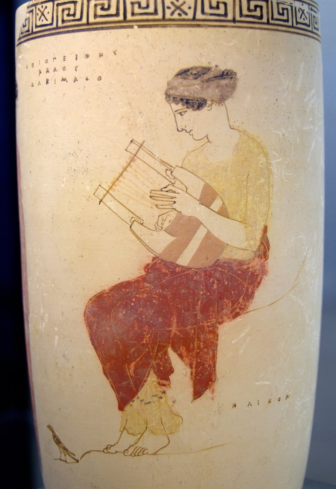

Fractions of a Whole
MA.3.FR.1.2 Represent and interpret fractions as the quantity formed when a part is partitioned into equal parts; count fractional parts.
Dimensions Math 3B, Chapter 9, Lesson 1 · Fractions of a Whole

Ancient Greece · more than 2,500 years ago

What does a fraction tell you?
A fraction uses two numbers to name part of one whole.
You will…
- Cut one whole into equal parts and name one part.
- Name a fraction by counting parts: how many? of what?
- Find the part left. The two parts make 1 whole.
Why Pythagoras?
Two real pieces of art. On the left, a painter named Raphael shows Pythagoras writing. The boy holds up a slate with music numbers on it. On the right is a Greek vase from long ago. A woman is playing a lyre.

Today's math: Pythagoras used equal parts of a string. Equal parts are what fractions are all about.
7 groups is 5 groups plus 2 more groups. Type each answer, then check. You can fix any answer and check again.
One of 2 equal parts
A strip cut into 2 equal parts. One part is shaded.
Think: Cut the String into 3 Equal Parts
🔨 Do · try it your way firstA string stretched tight over a long wooden box. The whole string is 1 whole. A bridge is a small wedge under the string. Each bridge cuts the string into parts you can pluck.
Pluck the whole string
Tap the string. Listen to its note.
Cut it into 3 equal parts
Slide the 2 bridges. Pluck each part. When all 3 parts sing the same note, the parts are equal.
Name one part
Each part is 13 (one-third) of the whole string. 3 one-thirds make 1 whole.
How many? Of what?
The numerator is on top. It answers how many? 2 parts.
The denominator is on the bottom. It answers of what? Thirds, because 3 equal parts make the whole.
Four ways to see the string in thirds
Your Turn: Build It with Tiles
🔨 DoOne of Pythagoras's students marked a string into 8 equal parts. She wrapped 6 parts in gold thread. What fraction of the string is gold?
Fraction tiles. The dark bar is 1 whole. The empty bar under it is where you build. The tray holds tiles of 3 sizes.
Cover the whole with equal tiles
The string has 8 equal parts. Find the tile that fits 8 times. Drag tiles up until the bar is full.
Shade the gold parts
Tap tiles to shade the parts wrapped in gold.
Count the parts
How many? Of what?
The part that is left
Fix the Upside-Down Label
🔨 DoA square cut into equal parts, with some parts shaded. Its old label is wrong. The numbers are in the wrong places.
Make a new label
Top: how many parts are shaded? Bottom: how many equal parts in all?
Say what each number means
Real Thirds or Not?
🔨 Do · ✏️ Write4 shapes. Each one is cut into 3 parts, and 1 part is shaded. Somebody called every shaded part "one-third."
Sort the shapes
Real thirds have 3 equal parts.
Tell why
The Part That Is Left
🔨 DoA round loaf of bread is cut into 10 equal slices. Pythagoras's students eat 4 slices. What fraction did they eat? What fraction is left?
The loaf on the left, cut into 10 equal slices. An empty plate on the right.
Eat 4 slices
Move 4 slices to the plate.
Name both parts
Put them back together
Cut a Board into Equal Strips
🔨 Do · ✏️ WriteA lyre maker cuts a wooden board into 7 equal strips. He paints 2 strips red, and he wants them apart, not side by side. What fraction is painted? What fraction is not?
A rectangle, like the board. The − and + buttons change how many equal parts it is cut into.
Make the board
7 equal parts. 2 painted parts, not side by side.
Name both parts
Is Cora right?
Make the board
7 equal parts, 2 painted.
Name both parts
A Long String and a Short String
🔨 Do · ✏️ WriteTwo strings on two boxes. The long string and the short string are each cut into 5 equal parts.
Color 3 parts on each string
Tap 3 parts on the long string and 3 parts on the short string.
Name them
Same name, same size?
Show What You Know
🔨 Do · ✏️ WriteProblem 1 · Shade a strip
This strip is cut into 10 equal parts. Shade 9 parts. Sketch it in your math journal too.
Problem 1 · Name both parts
Problem 2 · A honey cake
Cora's family cuts a round honey cake into 12 equal pieces. They eat 11 pieces. You can sketch it in your journal.
Prove It
Look at your strip from Problem 1. What does each number in 910 tell?
Make 1 Whole
My part is 37. What part makes 1 whole with mine?
Turn in your work
- Check the list below. Jobs 1 to 8 are required. The Bonus is optional.
- Press 📋 Gather my answers, then 📋 Copy. Or press 🖨️ Print or save as PDF.
- Open this lesson's assignment in Canvas.
- Paste your answers (or upload your PDF and journal photo), then press Submit.
All my answers
Your answers and your work on this page save on this device as you go.
Before you turn in
- I finished Jobs 1 to 8.
- I sketched the strip from Problem 1 in my math journal, with equal parts.
- I wrote my Prove It.
- I tried the Bonus. (optional)
Lesson 3.09.02 · Fractions on a Number Line
Pythagoras's string goes from a start to an end. Next time, that string becomes a number line from 0 to 1, and every fraction gets its own spot.
Bach · Cello Suite No. 1 · Prelude
Written about 300 years ago, for one cello. About 2½ minutes.
Johann Sebastian Bach, Cello Suite No. 1 in G major, BWV 1007, Prélude. Public-domain recording, Wikimedia Commons.